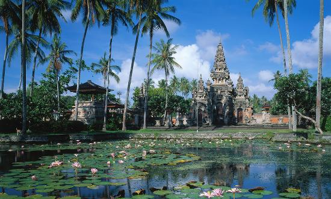
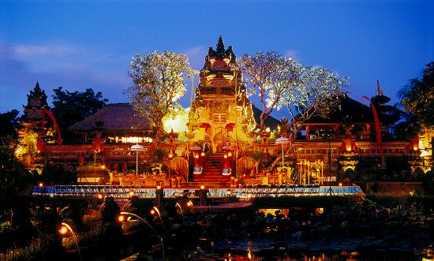
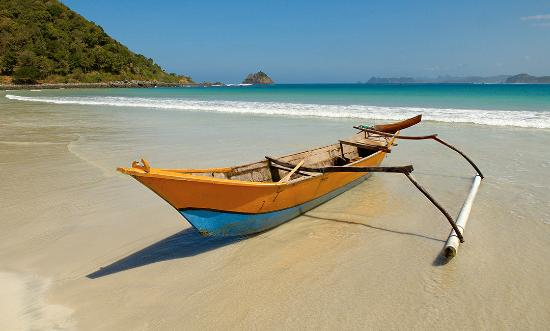
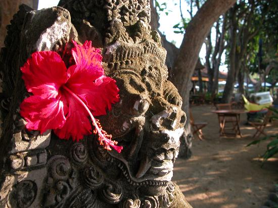
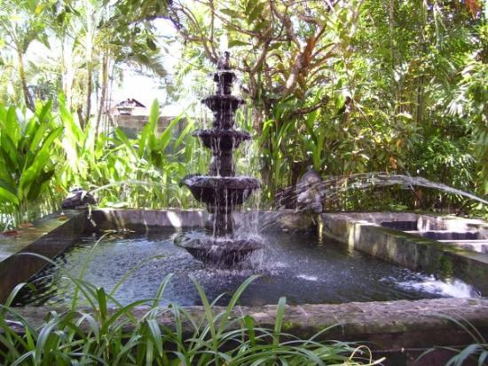
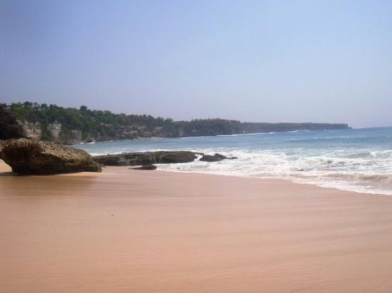
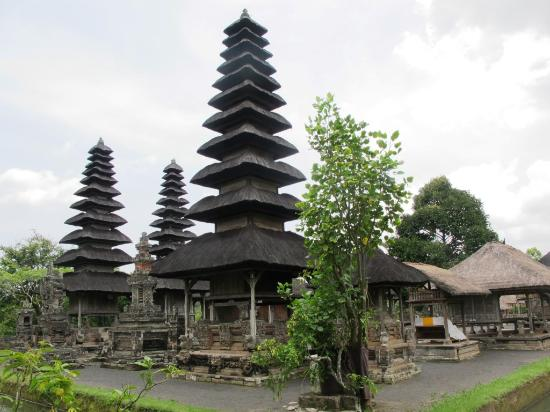
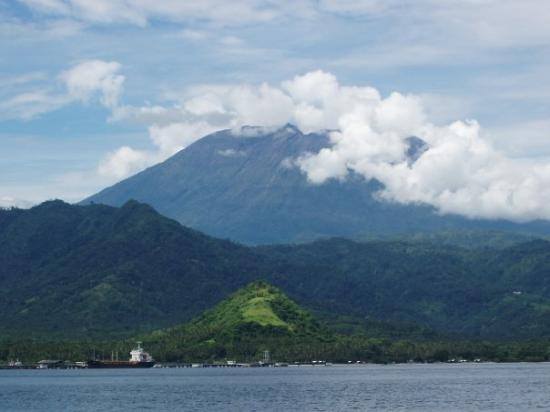

バリ島の観光スポット
スミニャック
スミニャックにはバリでも最高と言われるビーチがあります。ここでの素晴らしいサンセットは必見です。ビーチで行われる、ガムランの演奏と共に神にささげるバリ島の儀式に心を奪われることでしょう。もちろん、美しいビーチや文化を体験するだけではなく、スパやショッピングもお忘れなく。上質なスパや高級ブティックがあり、しばらく海のことなど忘れてしまうほど夢中になってしまいます。
{kind=link}
ウブド
バリ島のアートシーンの中心で、活気あふれるウブドは、博物館やギャラリーのちょっとした宝庫となっています。バリ空港から東北に 33 km 行ったところにあるこの町は、わりと辺ぴなところにあり、周りを田んぼや小さな村に囲まれています。沿岸の喧騒から離れた穏やかな町ウブドは、さまざまな村の集合体です。付近には、何百頭ものオナガマカクが生息する自然保護公園、猿の森があります。王のお墓が祀られている渓谷の寺院、グヌンカヌイにもぜひ訪れてみましょう。
{kind=link}
クタ
クタにはバリでも屈指の美しいビーチがあり、5 マイル (約 8 km) に渡って広がる美しい浜辺は、サーファーや日光浴を楽しみたい観光客を惹きつけて止みません。輝く太陽が沈んだら、パーティー好き達の出番です。クタはナイトライフも大変充実しており、世界各国からの旅行者がレストランやナイトクラブを心行くまで楽しみます。
{kind=link}
サヌール
サヌールの絵葉書のように美しいビーチは、誰もがあこがれるバリ島のビーチで過ごす休日を体現した、素晴らしい場所です。近隣のリゾート地よりも落ち着いた雰囲気が漂うサヌールには、にぎやかなパーティーを卒業したオシャレなヨーロッパ人が、のんびりと休暇を楽しむためにやってきます。毎年カイト フェスティバルが開催され、色とりどりのカイトが青空を舞います。
{kind=link}
レギャン
落ち着いた雰囲気の町、レギャンはリラックスするのに最適です。ビーチでの唯一のアトラクションといえば、夕方に行われる火を使った大道芸でしょう。火のボールが両手の間をすばやく、空高く舞い上がります。サーファー、ボディーボーダー、そして日光浴をする人たちが、ビーチでのんびり過ごします。マーケット、カフェ、レストランが充実しており、ショッピングもグルメも楽しめます。地元の人たちと交流したい方は、ブルー オーシャン ビーチで毎晩行われるサッカー ゲームに参加してみましょう。
{kind=link}
ジンバラン
ジンバランはインドネシアのバリ島にある、美しい漁村。白砂のビーチはとてもロマンティックです。海沿いには豪華なホテルや、小さなシーフードレストランが建ち並びます。ジューシーで新鮮なシーフードでお腹を満たしたら、5 つ星の豪華なホテルに戻る前に、インドネシアの美しい月明かりの下、ビーチを散歩しましょう。朝の散歩もおすすめです。
{kind=link}
ヌサドゥア
バリ島南部のブキット半島にあるビーチリゾート、ヌサドゥアには、ゴルフリゾートをはじめ、豪華ホテルがたくさんあります。地元の人も入れないこの特別なリゾートでは、サーフィンやダイビングがアクティブ派に人気です。長い階段を上った先にある、総本山ブサキ寺院に行ってみましょう。あまり体を動かしたくない人には、スパや一流レストラン、白い砂浜、そしてギャラリーやお店めぐりなどいかがでしょうか。バトゥブランでは、地元のバロンダンスが楽しめます。 5 月から 11 月にかけては、バリでは乾季となります。
{kind=link}
アメッド
バリ東部のビーチ タウンは、スキューバ ダイビングとシュノーケリングにうってつけの場所として有名です。特にチャンディダサを中心として、この海岸には新しいホテルが続々と建てられています。景色の美しい道を南に 40 分ほどドライブするとチャンディダサがあります。バリのカラフルなアウトリガー船を眺めるなら、アメッドがピッタリです。
{kind=link}